# A tibble: 6 × 10
Sector_Laboral Nivel_Ingresos Satisfaccion_Servicio Frecuencia_Participacion
<fct> <ord> <ord> <ord>
1 Educación Baja Satisfecho Siempre
2 Seguridad Alta Satisfecho Siempre
3 Transporte Baja Insatisfecho Rara vez
4 Seguridad Alta Satisfecho Nunca
5 Administrativo Alta Muy Satisfecho A veces
6 Seguridad Baja Insatisfecho Rara vez
# ℹ 6 more variables: Anos_Experiencia <dbl>, Numero_Hijos <dbl>,
# Salario <dbl>, Satisfaccion_Laboral <dbl>, Edad <dbl>,
# Participacion_Programas <dbl>- Cargar paquetes
Se emplean herramientas de R para importar, organizar, resumir y representar los datos. Las tablas y los gráficos se calculan directamente desde el archivo de Excel, de modo que los resultados se actualizan al volver a ejecutar el documento.
1 Introducción
La estadística descriptiva permite organizar, resumir y presentar información mediante tablas, medidas numéricas y gráficos. En este documento se desarrolla un análisis de una base de datos de 200 personas vinculadas a diferentes sectores de la administración pública.
El análisis conserva la estructura de distribución de frecuencias del documento de referencia sobre Deportes, pero utiliza exclusivamente los datos del archivo
sector (1).xlsx
. La clasificación de las variables se realiza de acuerdo con el diccionario suministrado.
Objetivo general
Analizar descriptivamente la información de las personas registradas en diferentes sectores laborales, aplicando distribuciones de frecuencias, medidas de tendencia central, medidas de dispersión y representaciones gráficas.
Objetivos específicos
- Identificar y clasificar las variables de acuerdo con el diccionario.
- Construir tablas de frecuencias absolutas, relativas y acumuladas.
- Calcular medidas estadísticas para las variables cuantitativas.
- Representar los resultados mediante gráficos estadísticos.
- Interpretar los principales patrones identificados en la base.
2 Distribución de frecuencias: conceptos y fórmulas
Una distribución de frecuencias organiza las observaciones en categorías o intervalos e indica cuántos registros pertenecen a cada uno.
Sea el conjunto de datos:
X = \{x_1,x_2,x_3,\ldots,x_n\}
donde (n) representa el número total de observaciones.
Frecuencia absoluta
La frecuencia absoluta indica el número de observaciones que pertenecen a una categoría o clase:
f_i = \text{número de observaciones de la categoría } i
La suma de las frecuencias absolutas corresponde al total de registros:
\sum_{i=1}^{k} f_i = n
Frecuencia relativa
La frecuencia relativa representa la proporción de observaciones de una categoría:
h_i = \frac{f_i}{n}
La suma de las frecuencias relativas es:
\sum_{i=1}^{k} h_i = 1
Porcentaje
El porcentaje se obtiene multiplicando la frecuencia relativa por cien:
p_i = h_i \times 100 = \frac{f_i}{n}\times 100
Frecuencia absoluta acumulada
La frecuencia absoluta acumulada suma progresivamente las frecuencias hasta la categoría (i):
F_i = \sum_{j=1}^{i} f_j
Frecuencia relativa acumulada
La frecuencia relativa acumulada se calcula mediante:
H_i = \sum_{j=1}^{i} h_j = \frac{F_i}{n}
Datos agrupados: regla de Sturges
Para agrupar variables cuantitativas continuas se utiliza como referencia la regla de Sturges:
k = 1 + 3.322\log_{10}(n)
El rango se calcula como:
R = X_{\max} - X_{\min}
La amplitud aproximada de los intervalos es:
A = \frac{R}{k}
La marca de clase corresponde al punto medio del intervalo:
m_i = \frac{L_i+L_s}{2}
donde (L_i) es el límite inferior y (L_s) el límite superior.
3 Cargar y conocer la base de datos
Importar el dataset
El archivo sector (1).xlsx debe permanecer en la misma carpeta que este documento .qmd.
Dimensiones de la base
Número de registros: 201 Número de variables: 10 Valores faltantes: 10 [1] 201 10La base contiene 201 registros y 10 variables.
Nombres y estructura de las variables
[1] "Sector_Laboral" "Nivel_Ingresos"
[3] "Satisfaccion_Servicio" "Frecuencia_Participacion"
[5] "Anos_Experiencia" "Numero_Hijos"
[7] "Salario" "Satisfaccion_Laboral"
[9] "Edad" "Participacion_Programas" Rows: 201
Columns: 10
$ Sector_Laboral <fct> Educación, Seguridad, Transporte, Seguridad, …
$ Nivel_Ingresos <ord> Baja, Alta, Baja, Alta, Alta, Baja, Alta, Alt…
$ Satisfaccion_Servicio <ord> Satisfecho, Satisfecho, Insatisfecho, Satisfe…
$ Frecuencia_Participacion <ord> Siempre, Siempre, Rara vez, Nunca, A veces, R…
$ Anos_Experiencia <dbl> 17, 18, 19, 20, 7, 18, 8, 8, 18, 6, 3, 5, 6, …
$ Numero_Hijos <dbl> 5, 4, 2, 4, 4, 3, 4, 2, 5, 1, 4, 1, 2, 5, 3, …
$ Salario <dbl> 4541, 2077, 3376, 4273, 4520, 4715, 4660, 269…
$ Satisfaccion_Laboral <dbl> 2.03, 1.95, 0.74, 1.35, 2.14, 0.78, 2.45, 1.7…
$ Edad <dbl> 56, 27, 31, 46, 36, 46, 49, 46, 58, 23, 56, 3…
$ Participacion_Programas <dbl> 0.347, 0.125, 0.484, 0.436, 0.142, 0.742, 0.4…Resumen general de la base
| Indicador | Resultado |
|---|---|
| Número de observaciones | 201 |
| Número de variables | 10 |
| Valores faltantes | 10 |
| Variables cualitativas | 4 |
| Variables cuantitativas | 6 |
4 Diccionario y clasificación de variables
La siguiente clasificación sigue la información del diccionario de variables entregado para el ejercicio.
| Variable | Clasificación | Descripción |
|---|---|---|
Sector_Laboral |
Cualitativa nominal | Sector laboral: Salud, Educación, Transporte, Seguridad y Administrativo. |
Nivel_Ingresos |
Cualitativa ordinal | Nivel de ingresos: Baja, Media y Alta. |
Satisfaccion_Servicio |
Cualitativa ordinal | Nivel de satisfacción con el servicio, desde Muy Insatisfecho hasta Muy Satisfecho. |
Frecuencia_Participacion |
Cualitativa ordinal | Frecuencia de participación: Nunca, Rara vez, A veces, Frecuentemente y Siempre. |
Anos_Experiencia |
Cuantitativa discreta | Años de experiencia laboral. |
Numero_Hijos |
Cuantitativa discreta | Número de hijos. |
Salario |
Cuantitativa continua | Salario mensual expresado en miles de pesos. |
Satisfaccion_Laboral |
Cuantitativa continua | Medición de satisfacción laboral. |
Edad |
Cuantitativa continua | Edad de las personas, en años. |
Participacion_Programas |
Cuantitativa continua | Proporción de participación en programas. |
. Nota sobre el salario: según el diccionario, la variable está expresada en miles de pesos. Por ejemplo, un valor de 1.000 equivale a $1.000.000 COP. Los cálculos conservan la unidad original de la base.
5 Tablas y gráficos de variables cualitativas
La frecuencia de las variables cualitativas permite conocer cómo se distribuyen las personas entre las categorías. Para las variables ordinales se conserva el orden establecido en el diccionario.
Función para calcular frecuencias
Variable nominal: sector laboral
La variable Sector_Laboral identifica el sector al que pertenece cada persona. Es nominal porque sus categorías no representan un orden jerárquico.
| Categoria | fi | hi | Porcentaje |
|---|---|---|---|
| Sector Salud | 40 | 0.199 | 19.900 |
| Educación | 44 | 0.219 | 21.891 |
| Transporte | 36 | 0.179 | 17.910 |
| Seguridad | 46 | 0.229 | 22.886 |
| Administrativo | 34 | 0.169 | 16.915 |
| NA | 1 | 0.005 | 0.498 |
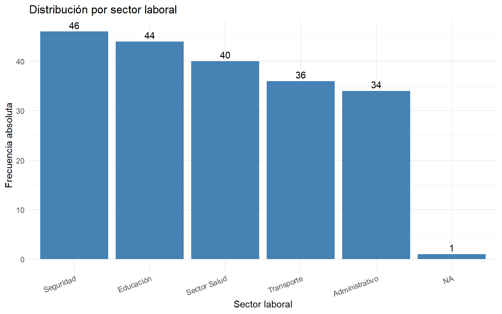
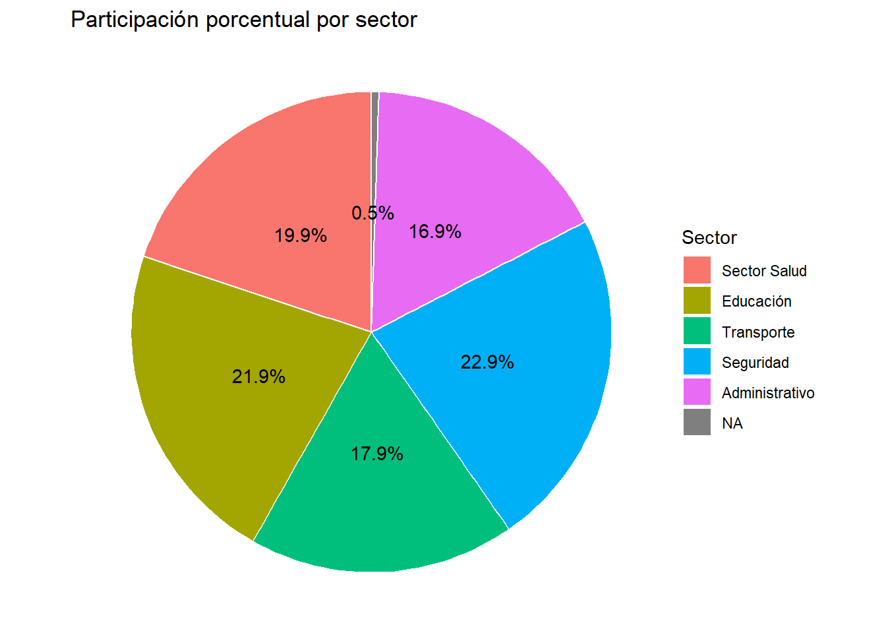
Interpretación. La tabla permite comparar la participación de los cinco sectores. El sector con mayor frecuencia es Seguridad, con 46 personas (23 %), mientras que Administrativo registra 34 personas (17 %). Estas cifras describen la composición de los registros analizados.
Variables ordinales
Nivel de ingresos
| Categoria | fi | hi | Porcentaje | Fi | Hi |
|---|---|---|---|---|---|
| Baja | 71 | 0.353 | 35.323 | 71 | 0.353 |
| Media | 63 | 0.313 | 31.343 | 134 | 0.667 |
| Alta | 66 | 0.328 | 32.836 | 200 | 0.995 |
| NA | 1 | 0.005 | 0.498 | 201 | 1.000 |
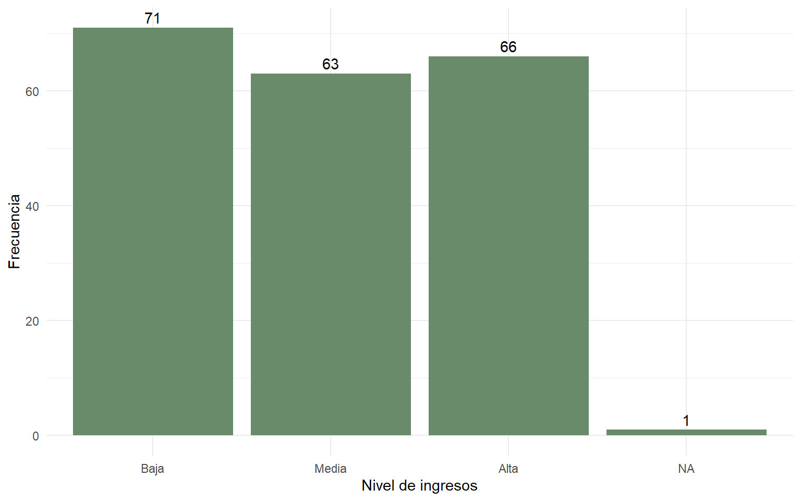
Interpretación La distribución permite identificar la cantidad y proporción de personas ubicadas en los niveles de ingresos bajo, medio y alto. La frecuencia acumulada facilita observar el porcentaje que se concentra hasta cada nivel.
Satisfacción con el servicio
| Categoria | fi | hi | Porcentaje | Fi | Hi |
|---|---|---|---|---|---|
| Muy Insatisfecho | 43 | 0.214 | 21.393 | 43 | 0.214 |
| Insatisfecho | 40 | 0.199 | 19.900 | 83 | 0.413 |
| Neutral | 37 | 0.184 | 18.408 | 120 | 0.597 |
| Satisfecho | 38 | 0.189 | 18.905 | 158 | 0.786 |
| Muy Satisfecho | 42 | 0.209 | 20.896 | 200 | 0.995 |
| NA | 1 | 0.005 | 0.498 | 201 | 1.000 |
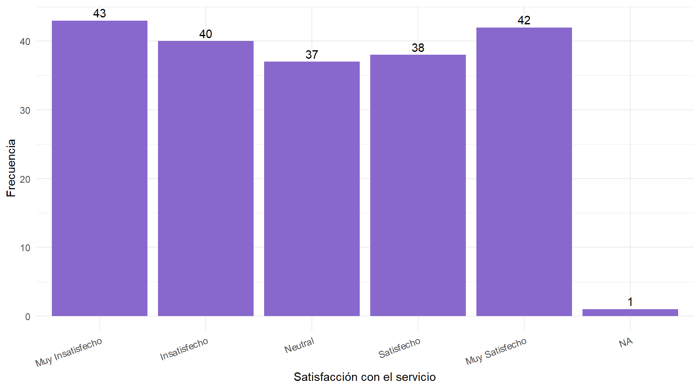
Interpretación Las categorías ordenadas permiten reconocer la distribución de la percepción del servicio desde la insatisfacción hasta la satisfacción. La interpretación debe considerar tanto las frecuencias como los porcentajes.
Frecuencia de participación
| Categoria | fi | hi | Porcentaje | Fi | Hi |
|---|---|---|---|---|---|
| Nunca | 32 | 0.159 | 15.920 | 32 | 0.159 |
| Rara vez | 37 | 0.184 | 18.408 | 69 | 0.343 |
| A veces | 46 | 0.229 | 22.886 | 115 | 0.572 |
| Frecuentemente | 37 | 0.184 | 18.408 | 152 | 0.756 |
| Siempre | 48 | 0.239 | 23.881 | 200 | 0.995 |
| NA | 1 | 0.005 | 0.498 | 201 | 1.000 |
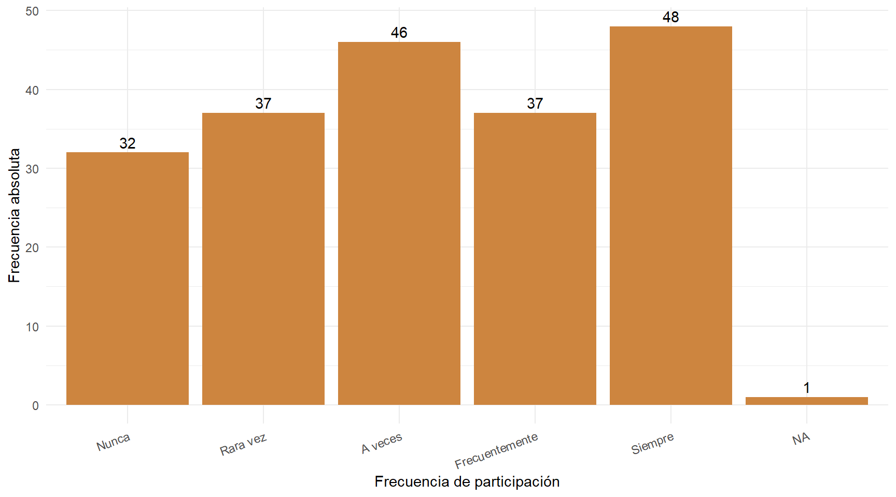
Interpretación La variable permite identificar si la participación ocurre nunca, rara vez, algunas veces, frecuentemente o siempre. La categoría con mayor frecuencia representa la respuesta más común de la muestra.
6 Análisis de variables cuantitativas
Las variables cuantitativas permiten realizar operaciones aritméticas y calcular medidas de tendencia central y dispersión.
Medidas de tendencia central
La media aritmética se calcula mediante:
\bar{x} = \frac{\sum_{i=1}^{n}x_i}{n}
La mediana corresponde al valor central de los datos ordenados:
Me = \\begin{cases} x_{\\left(\\frac{n+1}{2}\\right)}, & \\text{si } n \\text{ es impar},\\\\ \\frac{x_{(n/2)}+x_{(n/2+1)}}{2}, & \\text{si } n \\text{ es par}. \\end{cases}
La moda es el valor que presenta la mayor frecuencia:
Mo = \\operatorname{arg\\,max}_{x_i} f_i
Medidas de dispersión
La varianza muestral se expresa como:
s^2 = \frac{\sum_{i=1}^{n}(x_i-\bar{x})^2}{n-1}
La desviación estándar es:
s = \sqrt{s^2}
El rango corresponde a:
R = X_{\max} - X_{\min}
Función para calcular la moda y las medidas descriptivas
| Variable | n | Minimo | Maximo | Media | Mediana | Moda | Desviacion_estandar | Varianza | Rango |
|---|---|---|---|---|---|---|---|---|---|
| Anos_Experiencia | 200 | 0.00 | 20.000 | 9.835 | 10.000 | 1.000 | 6.151 | 37.837 | 20.000 |
| Numero_Hijos | 200 | 1.00 | 5.000 | 3.030 | 3.000 | 4.000 | 1.400 | 1.959 | 4.000 |
| Salario | 200 | 1085.00 | 4963.000 | 3235.870 | 3412.000 | 4581.000 | 1168.595 | 1365614.717 | 3878.000 |
| Satisfaccion_Laboral | 200 | 0.54 | 2.500 | 1.598 | 1.610 | 1.900 | 0.544 | 0.295 | 1.960 |
| Edad | 200 | 20.00 | 60.000 | 39.925 | 39.500 | 23.000 | 11.921 | 142.110 | 40.000 |
| Participacion_Programas | 200 | 0.10 | 0.982 | 0.540 | 0.496 | 0.125 | 0.257 | 0.066 | 0.882 |
Variables cuantitativas discretas
Las variables discretas toman valores contables. En esta base se identifican los años de experiencia y el número de hijos.
Años de experiencia
| Categoria | fi | hi | Porcentaje | Fi | Hi |
|---|---|---|---|---|---|
| 0 | 9 | 0.045 | 4.478 | 9 | 0.045 |
| 1 | 21 | 0.104 | 10.448 | 30 | 0.149 |
| 2 | 5 | 0.025 | 2.488 | 35 | 0.174 |
| 3 | 7 | 0.035 | 3.483 | 42 | 0.209 |
| 4 | 3 | 0.015 | 1.493 | 45 | 0.224 |
| 5 | 10 | 0.050 | 4.975 | 55 | 0.274 |
| 6 | 11 | 0.055 | 5.473 | 66 | 0.328 |
| 7 | 6 | 0.030 | 2.985 | 72 | 0.358 |
| 8 | 17 | 0.085 | 8.458 | 89 | 0.443 |
| 9 | 9 | 0.045 | 4.478 | 98 | 0.488 |
| 10 | 9 | 0.045 | 4.478 | 107 | 0.532 |
| 11 | 11 | 0.055 | 5.473 | 118 | 0.587 |
| 12 | 11 | 0.055 | 5.473 | 129 | 0.642 |
| 13 | 7 | 0.035 | 3.483 | 136 | 0.677 |
| 14 | 10 | 0.050 | 4.975 | 146 | 0.726 |
| 15 | 7 | 0.035 | 3.483 | 153 | 0.761 |
| 16 | 10 | 0.050 | 4.975 | 163 | 0.811 |
| 17 | 7 | 0.035 | 3.483 | 170 | 0.846 |
| 18 | 10 | 0.050 | 4.975 | 180 | 0.896 |
| 19 | 10 | 0.050 | 4.975 | 190 | 0.945 |
| 20 | 10 | 0.050 | 4.975 | 200 | 0.995 |
| NA | 1 | 0.005 | 0.498 | 201 | 1.000 |
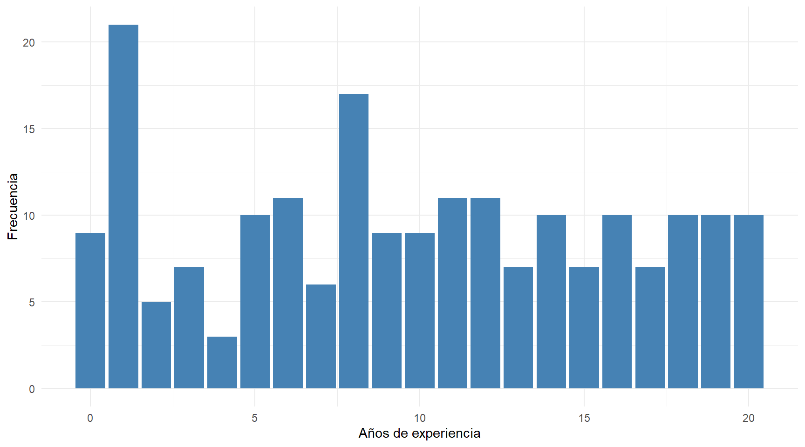
Número de hijos
| Categoria | fi | hi | Porcentaje | Fi | Hi |
|---|---|---|---|---|---|
| 1 | 39 | 0.194 | 19.403 | 39 | 0.194 |
| 2 | 38 | 0.189 | 18.905 | 77 | 0.383 |
| 3 | 38 | 0.189 | 18.905 | 115 | 0.572 |
| 4 | 48 | 0.239 | 23.881 | 163 | 0.811 |
| 5 | 37 | 0.184 | 18.408 | 200 | 0.995 |
| NA | 1 | 0.005 | 0.498 | 201 | 1.000 |
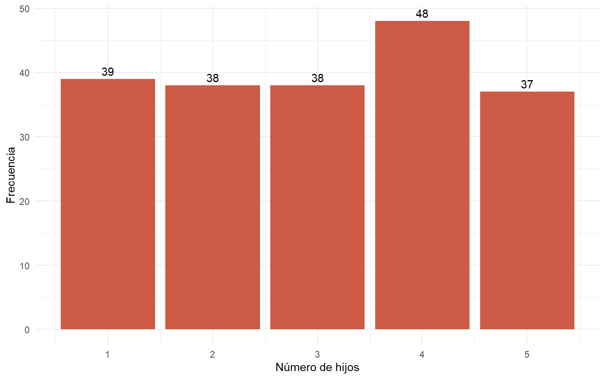
Variables cuantitativas continuas: distribución agrupada
Para construir las tablas agrupadas se utiliza la regla de Sturges. Los intervalos se generan automáticamente a partir del mínimo y máximo de cada variable.
Salario
El salario se encuentra expresado en miles de pesos, según el diccionario.
| Intervalo | Marca_clase | fi | hi | Porcentaje | Fi | Hi |
|---|---|---|---|---|---|---|
| [1085,1515.8889] | 1300.444 | 22 | 0.110 | 11.0 | 22 | 0.110 |
| (1515.8889,1946.7778] | 1731.333 | 13 | 0.065 | 6.5 | 35 | 0.175 |
| (1946.7778,2377.6667] | 2162.222 | 19 | 0.095 | 9.5 | 54 | 0.270 |
| (2377.6667,2808.5556] | 2593.111 | 20 | 0.100 | 10.0 | 74 | 0.370 |
| (2808.5556,3239.4444] | 3024.000 | 17 | 0.085 | 8.5 | 91 | 0.455 |
| (3239.4444,3670.3333] | 3454.889 | 25 | 0.125 | 12.5 | 116 | 0.580 |
| (3670.3333,4101.2222] | 3885.778 | 23 | 0.115 | 11.5 | 139 | 0.695 |
| (4101.2222,4532.1111] | 4316.667 | 28 | 0.140 | 14.0 | 167 | 0.835 |
| (4532.1111,4963] | 4747.556 | 33 | 0.165 | 16.5 | 200 | 1.000 |
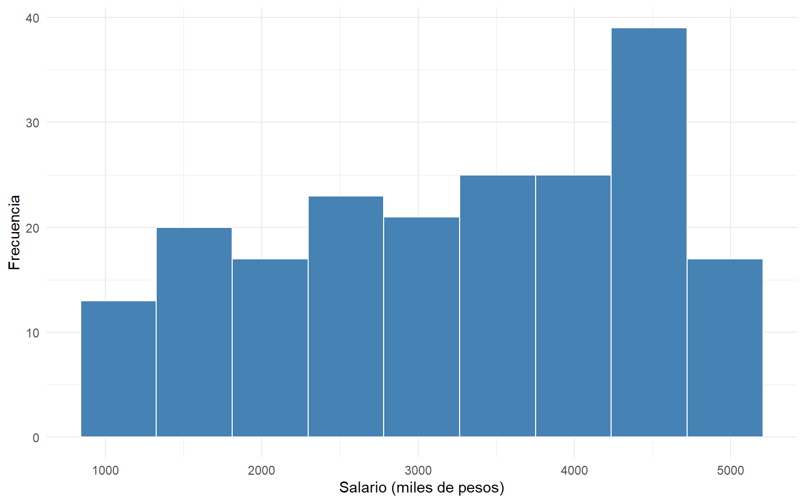
Satisfacción laboral
| Intervalo | Marca_clase | fi | hi | Porcentaje | Fi | Hi |
|---|---|---|---|---|---|---|
| [0.54,0.75777778] | 0.649 | 14 | 0.070 | 7.0 | 14 | 0.070 |
| (0.75777778,0.97555556] | 0.867 | 22 | 0.110 | 11.0 | 36 | 0.180 |
| (0.97555556,1.1933333] | 1.084 | 15 | 0.075 | 7.5 | 51 | 0.255 |
| (1.1933333,1.4111111] | 1.302 | 20 | 0.100 | 10.0 | 71 | 0.355 |
| (1.4111111,1.6288889] | 1.520 | 31 | 0.155 | 15.5 | 102 | 0.510 |
| (1.6288889,1.8466667] | 1.738 | 25 | 0.125 | 12.5 | 127 | 0.635 |
| (1.8466667,2.0644444] | 1.956 | 21 | 0.105 | 10.5 | 148 | 0.740 |
| (2.0644444,2.2822222] | 2.173 | 30 | 0.150 | 15.0 | 178 | 0.890 |
| (2.2822222,2.5] | 2.391 | 22 | 0.110 | 11.0 | 200 | 1.000 |

Edad
| Intervalo | Marca_clase | fi | hi | Porcentaje | Fi | Hi |
|---|---|---|---|---|---|---|
| [20,24.444444] | 22.222 | 26 | 0.130 | 13.0 | 26 | 0.130 |
| (24.444444,28.888889] | 26.667 | 21 | 0.105 | 10.5 | 47 | 0.235 |
| (28.888889,33.333333] | 31.111 | 23 | 0.115 | 11.5 | 70 | 0.350 |
| (33.333333,37.777778] | 35.556 | 19 | 0.095 | 9.5 | 89 | 0.445 |
| (37.777778,42.222222] | 40.000 | 23 | 0.115 | 11.5 | 112 | 0.560 |
| (42.222222,46.666667] | 44.444 | 22 | 0.110 | 11.0 | 134 | 0.670 |
| (46.666667,51.111111] | 48.889 | 19 | 0.095 | 9.5 | 153 | 0.765 |
| (51.111111,55.555556] | 53.333 | 24 | 0.120 | 12.0 | 177 | 0.885 |
| (55.555556,60] | 57.778 | 23 | 0.115 | 11.5 | 200 | 1.000 |
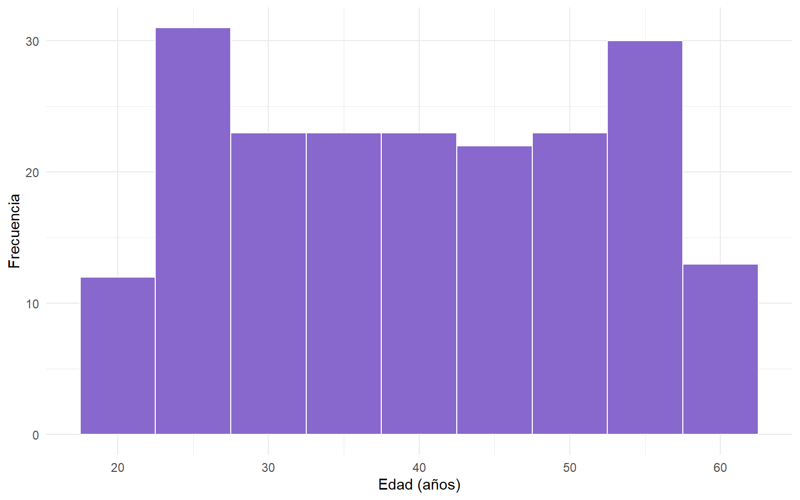
Participación en programas
La variable se expresa como proporción. Para mostrarla como porcentaje se multiplica por cien.
P(\%) = P \times 100
| Intervalo | Marca_clase | fi | hi | Porcentaje | Fi | Hi |
|---|---|---|---|---|---|---|
| [0.1,0.198] | 0.149 | 22 | 0.110 | 11.0 | 22 | 0.110 |
| (0.198,0.296] | 0.247 | 19 | 0.095 | 9.5 | 41 | 0.205 |
| (0.296,0.394] | 0.345 | 24 | 0.120 | 12.0 | 65 | 0.325 |
| (0.394,0.492] | 0.443 | 34 | 0.170 | 17.0 | 99 | 0.495 |
| (0.492,0.59] | 0.541 | 16 | 0.080 | 8.0 | 115 | 0.575 |
| (0.59,0.688] | 0.639 | 18 | 0.090 | 9.0 | 133 | 0.665 |
| (0.688,0.786] | 0.737 | 22 | 0.110 | 11.0 | 155 | 0.775 |
| (0.786,0.884] | 0.835 | 21 | 0.105 | 10.5 | 176 | 0.880 |
| (0.884,0.982] | 0.933 | 24 | 0.120 | 12.0 | 200 | 1.000 |
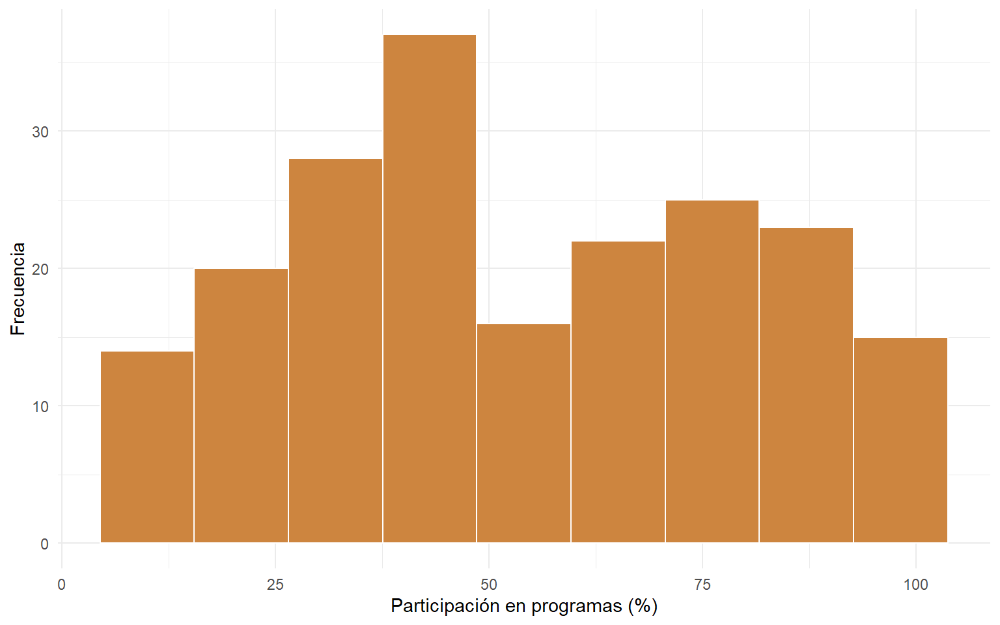
Ojivas de frecuencia acumulada
La ojiva representa la frecuencia acumulada frente al límite superior de los intervalos. Permite observar el crecimiento acumulado de las observaciones.
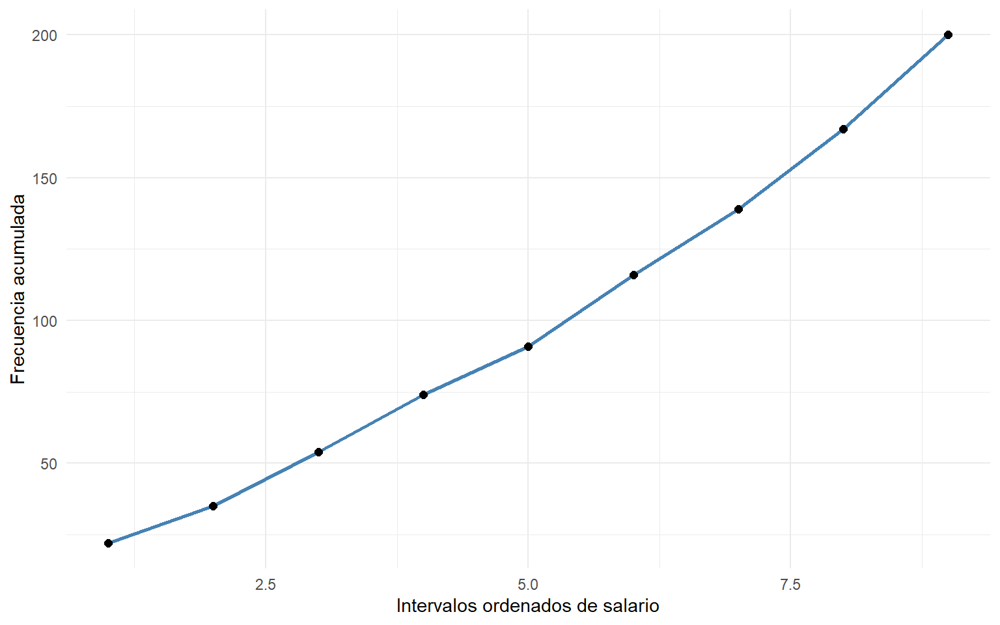
7 Gráficos complementarios y relaciones entre variables
Comparación del salario por sector laboral
El diagrama de caja permite comparar la mediana, la dispersión y los posibles valores atípicos del salario entre sectores.
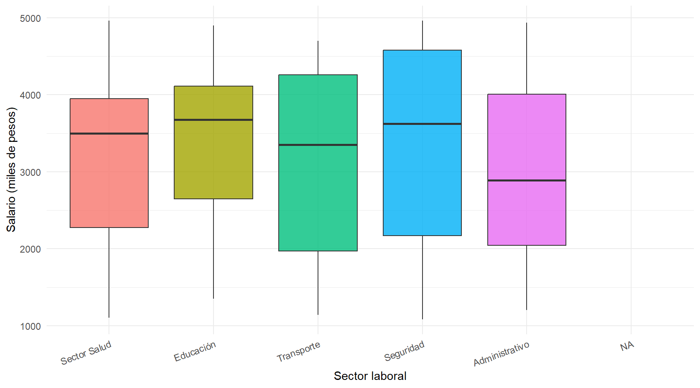
Relación entre edad y salario
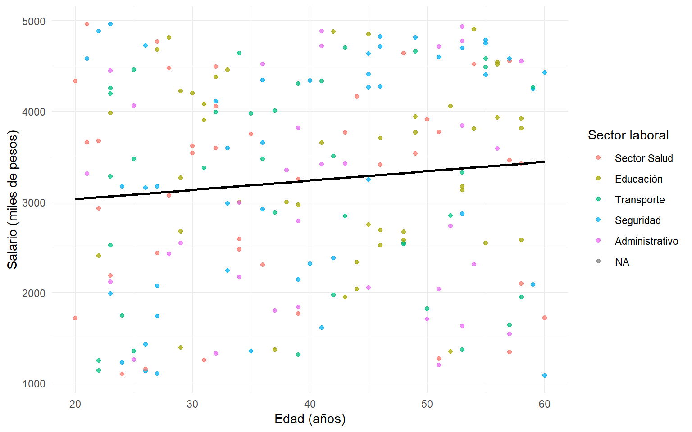
Tabla de contingencia: sector laboral y nivel de ingresos
Una tabla de contingencia permite estudiar conjuntamente dos variables categóricas.
La frecuencia relativa conjunta se calcula mediante:
h_{ij} = \frac{f_{ij}}{n}
Baja Media Alta Sum
Sector Salud 16 9 15 40
Educación 10 16 18 44
Transporte 16 10 10 36
Seguridad 19 14 13 46
Administrativo 10 14 10 34
Sum 71 63 66 2008 Frecuencias relativas conjuntas
| Baja | Media | Alta | |
|---|---|---|---|
| Sector Salud | 0.080 | 0.045 | 0.075 |
| Educación | 0.050 | 0.080 | 0.090 |
| Transporte | 0.080 | 0.050 | 0.050 |
| Seguridad | 0.095 | 0.070 | 0.065 |
| Administrativo | 0.050 | 0.070 | 0.050 |
9 Gráfico de barras apiladas
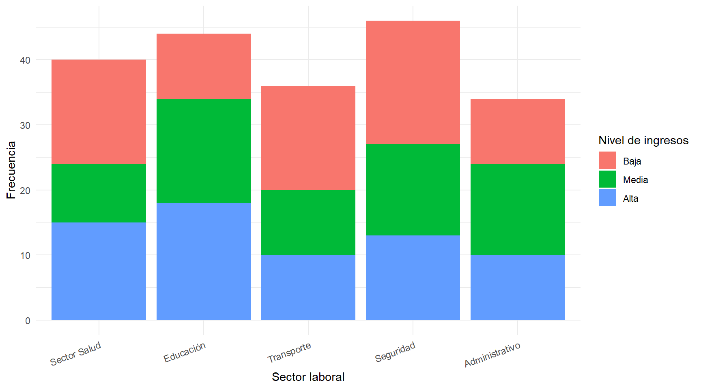
Interpretación La tabla permite comparar cómo se distribuyen los niveles de ingresos dentro de cada sector laboral. Las frecuencias conjuntas muestran la participación de cada combinación respecto al total de registros. Esta asociación descriptiva no demuestra causalidad.
10 Interpretación general de resultados
La base contiene 200 registros y diez variables, sin valores faltantes. La distribución sectorial muestra una mayor participación de Seguridad, seguida de Educación, Sector Salud, Transporte y Administrativo.
Las variables ordinales permiten examinar los niveles de ingresos, la satisfacción con el servicio y la frecuencia de participación. Las variables cuantitativas permiten describir experiencia, número de hijos, salario, satisfacción laboral, edad y participación en programas.
Las tablas y gráficos se generan a partir de la base original, por lo que las cifras se actualizan automáticamente si se modifica el archivo Excel y se vuelve a ejecutar el documento.
11 Conclusiones
- La base de datos está conformada por 200 observaciones y diez variables relacionadas con sectores laborales, ingresos, satisfacción, experiencia y participación en programas.
- La clasificación del diccionario permite aplicar procedimientos estadísticos adecuados a cada tipo de variable.
- Las tablas de frecuencias muestran la distribución de las personas por sector laboral, nivel de ingresos, satisfacción con el servicio y frecuencia de participación.
- Las medidas de tendencia central y dispersión resumen el comportamiento de las variables cuantitativas.
- Los histogramas, diagramas de caja, gráficos de barras y ojivas facilitan la interpretación visual de los datos.
- La tabla de contingencia permite comparar el sector laboral con el nivel de ingresos, sin establecer relaciones causales.
- Los resultados describen exclusivamente los 200 registros suministrados y no deben generalizarse a toda la administración pública sin conocer el diseño de muestreo.
12 Fuentes de información
- Base de datos:
sector (1).xlsx, archivo suministrado para el ejercicio. - Diccionario de variables:
DICCIONARIO DE VARIABLES (1).pdf, archivo suministrado para la clasificación y definición de las variables. - Wickham, H., et al. (2019). Welcome to the tidyverse. Journal of Open Source Software, 4(43), 1686. https://doi.org/10.21105/joss.01686
- Wickham, H., & Bryan, J. (2025). readxl: Read Excel Files. https://doi.org/10.32614/CRAN.package.readxl
Nota de reproducibilidad: para generar el informe, el archivo Excel y este documento Quarto deben permanecer en la misma carpeta. El código R importa la base, construye las tablas y produce los gráficos automáticamente.